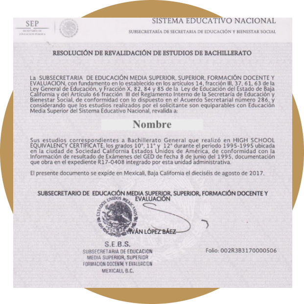

Comprobante de estudios

 Si las materias cursadas de tu titulación se asemejan un 40% a su programa
equivalente en México. La Secretaría de Educación revalida tus estudios en el
extranjero.
Si las materias cursadas de tu titulación se asemejan un 40% a su programa
equivalente en México. La Secretaría de Educación revalida tus estudios en el
extranjero.
-
Si quieres acabar tus estudios y que los reconozcan en México, infórmate sobre
equivalencias de estudios (para personas mexicanas).
Si hiciste estudios de primaria, secundaria, bachillerato, licenciatura o postgrado en el extranjero, probablemente necesitarás revalidar tus estudios para darles validez en México la entidad que los revalida es la Secretaría de Educación Pública (SEP).
¿Dónde contactarlos?
Recuerda que estos trámites son gratuitos

Dirección General para
la Acreditación, Incorporación
y Revalidación (DGAIR)